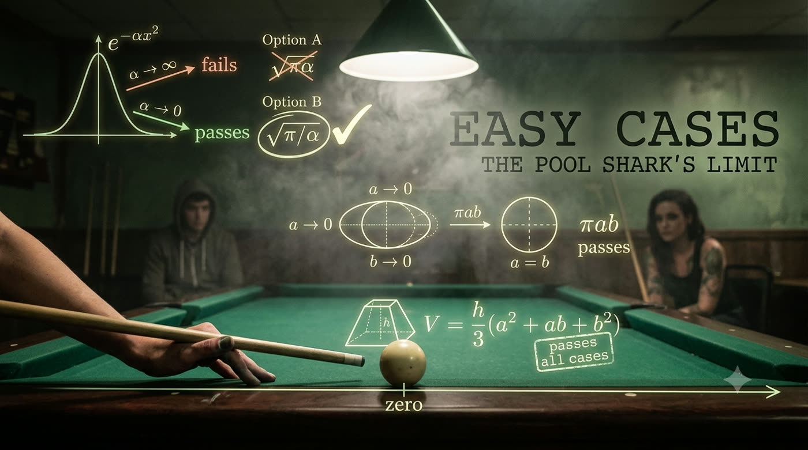

THE GAUSSIAN BET:
∫ e^(-αx²) dx from -∞ to ∞
Option A: √(πα) Option B: √(π/α)
TEST AT EASY CASES:
┌──────────┬────────────────┬─────────────────┐
│ Case │ Option A │ Option B │
├──────────┼────────────────┼─────────────────┤
│ α → ∞ │ → ∞ (WRONG) │ → 0 ✓ │
│ α → 0 │ → 0 (WRONG) │ → ∞ ✓ │
│ α = 1 │ √π ✓ │ √π ✓ │
└──────────┴────────────────┴─────────────────┘
Option A fails BOTH limit tests. Dead.
Option B passes all three. Winner.
THE METHOD:
1. Test at extremes (0, ∞)
2. Test at known special cases (α=1)
3. Eliminate candidates that fail
4. Three constraints → one survivor
No integration. No calculus tricks.
Just checking the edges.
FADE IN: A dim pool hall. Smoke, green felt, the crack of balls. SONIA (40s, tattooed forearms, moves with quiet precision) runs the table while a GRAD STUDENT (20s, hoodie, laptop bag) watches from a stool. GRAD STUDENT You always know which shot to take. Like you can see the whole table at once. SONIA (chalking her cue) I don't see the whole table. I see the edges. GRAD STUDENT The edges? SONIA The extremes. The easy cases. When an angle is zero. When it's ninety. When a ball is against the rail. When it's dead center. If I know what happens at the limits, I can fill in the middle. GRAD STUDENT That sounds like a math thing. SONIA (sinking the three ball without looking) It IS a math thing. A correct answer works in ALL cases — including the easy ones. So test it at the easy ones first. If it fails there, it's wrong everywhere.
The Grad Student pulls out a notebook, eager. GRAD STUDENT Okay. I've got this integral on my problem set and two possible answers. Can't figure out which is right. He writes: ∫ e^(-αx²) dx from -∞ to ∞ Option A: √(πα) Option B: √(π/α) SONIA (leaning on her cue) What's alpha? GRAD STUDENT A positive constant. Could be anything from zero to infinity. SONIA Perfect. Then test it at the edges. What happens to the bell curve when alpha goes to infinity? GRAD STUDENT (thinking) The exponent becomes hugely negative everywhere. The curve squeezes to nothing. The area goes to zero. SONIA Good. Now check your candidates. When alpha goes to infinity — what does Option A do? GRAD STUDENT √(πα)... goes to infinity. SONIA And Option B? GRAD STUDENT √(π/α)... goes to zero. SONIA (tapping the table) Option A says the area is infinite when the curve is a sliver. That's nonsense. Option A is dead.
SONIA That's the first test. Alpha equals infinity. The curve flattens to zero, so the area must be zero. Option A gave infinity — wrong. Option B gave zero — passes. She racks the balls for the next game. SONIA (CONT'D) But passing one test doesn't make it right. Let's hit the other extreme. What happens when alpha goes to zero? GRAD STUDENT The exponent becomes zero everywhere... e-to-the-zero is one... the curve flattens into a horizontal line at height one. Integrated over an infinite range... SONIA The area is? GRAD STUDENT Infinite. SONIA Check Option A at alpha equals zero. GRAD STUDENT √(πα) = √(0) = zero. But the area should be infinite. Fails AGAIN. SONIA And Option B? GRAD STUDENT √(π/α) = √(π/0) = infinity. Passes! SONIA (breaking the rack with a sharp crack) Two tests. Option A fails both. Option B passes both. If those were the only two choices on your exam — you'd be done. No integration. No calculus tricks. Just checking the edges.
GRAD STUDENT But what if someone gives me a third option? Like √(2/α)? That passes both tests too. SONIA Smart. You need a third easy case. What about alpha equals one? GRAD STUDENT Then the integral is just ∫ e^(-x²) dx. The classic Gaussian. That's √π. I actually know that one. SONIA So plug alpha equals one into each option. He writes: Option B: √(π/1) = √π ✓ Option C: √(2/1) = √2 ✗ (should be √π ≈ 1.77, not √2 ≈ 1.41) SONIA Three tests. Three easy cases. Alpha equals infinity, alpha equals zero, alpha equals one. Option B is the only survivor. GRAD STUDENT (staring at his notebook) I just... solved a calculus problem without doing calculus. SONIA You didn't solve it. You TESTED it. A correct formula works in all cases. If it fails an easy case, it's wrong — guaranteed. You're using the easy cases as a filter. A lie detector for formulas.
Sonia sinks three balls in succession. The Grad Student watches, then gets an idea. GRAD STUDENT Okay, let me try one. Area of an ellipse with semi-axes a and b. My textbook gives five candidate formulas: (a) ab² (b) a² + b² (c) a³/b (d) 2ab (e) πab SONIA (nodding) Good. What are your easy cases? GRAD STUDENT Um... when a equals zero? The ellipse collapses to nothing. Area should be zero. SONIA Test them all. GRAD STUDENT (writing fast) (a) ab² = 0·b² = 0 ✓ (b) a² + b² = 0 + b² = b² ✗ — should be zero! (c) a³/b = 0 ✓ (d) 2ab = 0 ✓ (e) πab = 0 ✓ SONIA Option (b) is dead. What's the next easy case? GRAD STUDENT Symmetry — b equals zero. Same collapse. SONIA And? GRAD STUDENT (c) a³/b = a³/0 = infinity ✗ — should be zero! Option (c) is dead too. Down to three.
SONIA Now the killer. When a equals b, the ellipse becomes a circle of radius a. What's the area of a circle? GRAD STUDENT πa². SONIA Check the survivors. GRAD STUDENT (a) ab² → a·a² = a³ ✗ — should be πa²! (d) 2ab → 2a² ✗ — should be πa²! (e) πab → πa² ✓ (The Grad Student's pen hovers) GRAD STUDENT Only πab survives all three tests. SONIA (lining up her next shot) Three easy cases. Five candidates. One survivor. No calculus. No integration by substitution. Just common sense about what happens at the limits. GRAD STUDENT But (a) had the right dimensions... SONIA Dimensions are necessary but not sufficient. Easy cases add more filters. The more tests you apply, the fewer liars survive. Stack the tools — dimensions, then easy cases — and you can corner the truth without ever solving the problem.
SONIA So far we've used easy cases to ANALYZE — to check if an answer is right. But here's the next level: using easy cases to SYNTHESIZE. To build the answer from scratch. She draws on a bar napkin. SONIA (CONT'D) Say you don't have candidates. You just have a problem. A truncated pyramid — square base of side b, square top of side a, height h. What's the volume? GRAD STUDENT No options to test. How do I even start? SONIA Start with what you know. The volume must depend on h, a, and b. Now use easy cases as CONSTRAINTS on the formula. Each easy case tells you something the formula MUST do. GRAD STUDENT Okay... when a equals zero, it's just a regular pyramid. Volume of a pyramid is... one-third h times b-squared? SONIA Good. That's constraint one: V → (1/3)hb² when a = 0. GRAD STUDENT When b equals zero... it's an upside-down pyramid. V → (1/3)ha². SONIA Constraint two. And when a equals b? GRAD STUDENT It's a rectangular box. V = ha². Or hb². Same thing since a = b. SONIA Constraint three. Now: what formula satisfies ALL THREE?
The Grad Student chews his pen, thinking. GRAD STUDENT It needs to give (1/3)hb² when a is zero... and (1/3)ha² when b is zero... so there's a factor of h/3... and it needs a² and b² symmetrically... He writes: V = (h/3)(a² + b²)? GRAD STUDENT (CONT'D) Wait — when a = b, that gives (h/3)(2a²) = (2/3)ha². But it should be ha². Doesn't work. SONIA You're close. What if you add a cross term? GRAD STUDENT V = (h/3)(a² + ab + b²)? When a = 0: (h/3)(b²) = hb²/3 ✓ When b = 0: (h/3)(a²) = ha²/3 ✓ When a = b: (h/3)(a² + a² + a²) = (h/3)(3a²) = ha² ✓ (His eyes widen) GRAD STUDENT (CONT'D) All three constraints satisfied! SONIA That's it. That's the exact volume of a truncated pyramid. Known since ancient Egypt — the Moscow Papyrus, 1850 BC. You just derived it in a pool hall using three easy cases. GRAD STUDENT No integration? SONIA No integration. The constraints were enough to pin it down. Easy cases don't just check answers — they BUILD them.
SONIA The method works because physical and mathematical formulas are usually simple polynomials or power laws. If you have enough constraints — enough easy cases — you can uniquely determine the coefficients. GRAD STUDENT Like solving a system of equations, but the equations come from common sense. SONIA Exactly. And here's the beauty: the easy cases are EASY. That's the whole point. You pick the cases where you already know the answer — where the problem collapses into something trivial. Zero, infinity, equality, symmetry. She ticks them off on the pool cue: SONIA (CONT'D) Zero: something vanishes. Infinity: something dominates. Equality: something simplifies. Symmetry: something reduces. Each one gives you a free equation. Stack enough of them and the answer builds itself. GRAD STUDENT It's like... you're triangulating the answer from its boundaries. SONIA (pointing the cue at him) Now you're thinking like a pool player. You don't need to track every molecule in the ball's trajectory. You just need to know where it starts, where it ends, and what the rail does in between.
Sonia runs the table — eight ball, clean pocket. She sets down her cue. SONIA Here's what easy cases give you. She holds up her chalk like a microphone. SONIA (CONT'D) Analysis: test any formula by plugging in the extremes. If it fails an easy case, throw it away. No mercy. Synthesis: if you don't have a formula, USE the easy cases as building blocks. Each extreme tells you a constraint. Enough constraints pin down the answer. And the best part? GRAD STUDENT What? SONIA It's simple. Dead simple. The easy cases are — by definition — easy. You're using the problems you CAN solve to check or build the ones you can't. GRAD STUDENT (packing up his laptop bag) I've been trying to solve that integral for three days. You killed four wrong answers in two minutes. SONIA (racking for a solo game) A correct solution works in ALL cases. Including the easy ones. That's not just a technique — it's a philosophy. If your answer can't survive the simplest test, it won't survive the real world either. She breaks. The balls scatter. She's already planning three shots ahead — starting from the edges. FADE OUT.